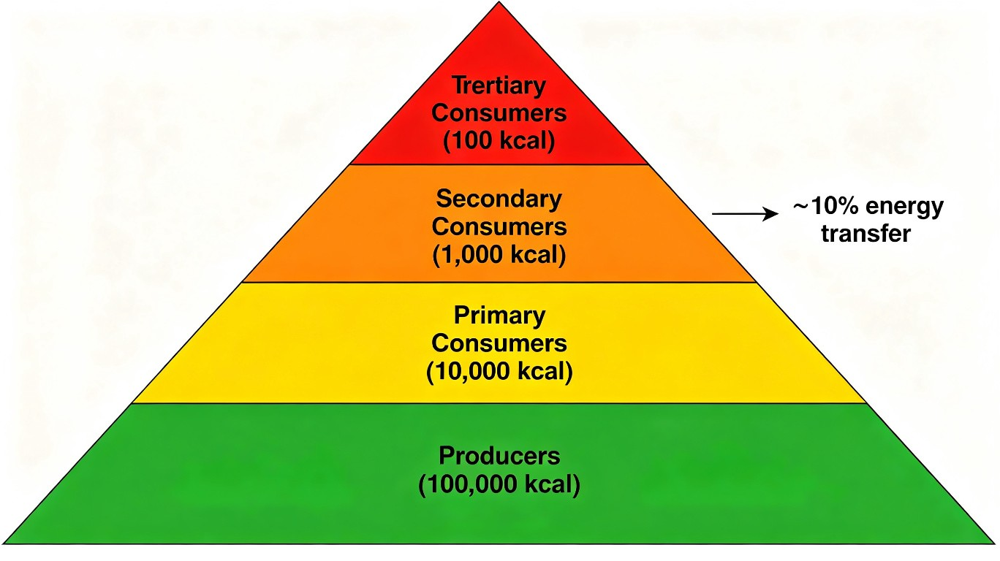
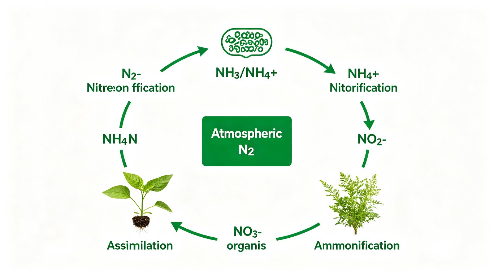

四、生态系统
4 大基本成分 + 3 大功能群
1.1 生态系统的定义与组成
生态系统(ecosystem):在一定空间内,生物成分和非生物成分通过物质循环、能量流动和信息传递而相互作用、相互依存的统一整体。
生态系统 = 非生物成分 + 生物成分(群落)
4 大基本成分:
- ①非生物成分(abiotic component):无机物、有机化合物、气候因素——光、水、温、气、土壤
- ②生产者(producer):自养生物——绿色植物 + 光合细菌(蓝藻、紫色硫细菌)
- ③消费者(consumer):异养生物——植食、肉食、杂食、寄生动物
- ④分解者(decomposer, 还原者):异养生物——细菌、真菌、放线菌、部分动物(蚯蚓、粪金龟)
3 大功能群(分类):非生物成分 + 生产者 + 消费者 + 分解者(其中生物成分 3 类=生物群落)。
1.2 生产者、消费者、分解者的辨析(奥赛易错)
📌 奥赛易错点:
- 细菌不都是分解者——有的细菌是生产者(硝化细菌、硫细菌、铁细菌——化能自养)或消费者(寄生细菌、病原菌)
- 植物不都是生产者——食虫植物(猪笼草、茅膏菜)是消费者;寄生植物(菟丝子)也是消费者
- 病毒是专性寄生生物,被视为消费者
- 以生物遗体、粪便、有机碎屑为食的动物(如蚯蚓、粪金龟、白蚁)是分解者
§1 生态系统组成小结
- 生态系统 = 非生物成分 + 生产者 + 消费者 + 分解者(4 大成分)
- 生物群落 = 生产者 + 消费者 + 分解者(3 大功能群)
- 细菌:不全是分解者——光合/化能自养=生产者,寄生=消费者
- 植物:不全是生产者——食虫植物、寄生植物=消费者
- 病毒:专性寄生=消费者
营养级、能量锥体、生物放大
2.1 食物链的类型
食物链(food chain)是指生态系统中不同生物之间在营养关系中形成的一环套一环似链条式的关系——物质和能量从植物开始,一级一级转移到食肉动物。链上的每一环节称为营养级(trophic level)。
食物链 2 大类型:
- 牧食食物链(grazing food chain):又称捕食食物链,以活的动植物为起点
- 代表:绿色植物→草食动物→各级食肉动物
- 寄生食物链可看作捕食食物链的特殊类型
- 腐食食物链(detrital food chain):又称碎屑食物链,从死亡的有机体或腐屑开始
📌 奥赛典型:须鲸以小型甲壳类动物为食——属于缩短食物链,降低营养级间的能量消耗——使须鲸能以较少营养级获得大量能量。
2.2 食物网与营养关系
食物网(food web):多种食物链相互交错形成的网状结构——反映系统中有机体之间的营养位置和相互关系。
特点:
- 食物网是生态系统营养结构的形象体现
- 各生物成分间通过食物网发生直接和间接联系,保持系统稳定性
- 能流和物质循环沿食物网进行
- 食物网是有毒污染物转移、积累的途径
2.3 生态金字塔(3 大类型)
营养级之间特定的数量关系用生态金字塔表示,分 3 大类型:
| 类型 | 度量 | 是否一定呈正金字塔 | 反例(倒置情况) |
|---|---|---|---|
| 数量锥体(pyramid of numbers) | 各营养级个体数 | 否 | 树→蚜虫(1 棵树支持大量蚜虫,数量倒置) |
| 生物量锥体(pyramid of biomass) | 各营养级现存量 | 通常正 | 海洋:浮游植物生物量 < 浮游动物(寿命短,周转快) |
| 能量锥体(pyramid of energy) | 各营养级能量流 | 一定正(无倒置) | 无——热力学第二定律保证 |
📌 奥赛判断:
- 数量金字塔不一定正金字塔:松毛虫和松树——松毛虫数量大于松树(松毛虫个体小)
- 生物量金字塔不一定正:海洋浮游生态系统(浮游植物生物量反小于浮游动物)
- 能量金字塔必为正——热力学第二定律保证能量逐级递减

2.4 上行控制 vs 下行控制
营养级之间 2 类调控:
- 上行控制(bottom-up control):低营养级(资源)调控高营养级——资源限制从下往上传递
- 下行控制(top-down control):高营养级(捕食者)调控低营养级——通过捕食控制下层
奥赛典型"下行控制":
- 用赤眼蜂防治棉铃虫、玉米螟——捕食控制
- 将苏云金芽孢杆菌毒素基因转入烟草——基因工程控制
- 加速秋期收割并翻耕,减少田间鼠类冬贮食物——破坏食物资源
📌 奥赛易错:调节田间氮肥,优化小麦生长,控制麦秆蝇——是上行控制(从营养级下层资源调节,不是下行)。
§2 食物链与生态金字塔小结
- 食物链 2 大类:牧食食物链(活的动植物为起点)/ 腐食食物链(死有机体或腐屑为起点)
- 食物网 = 多种食物链交错形成的网状结构
- 生态金字塔 3 类型:数量锥体(不一定正,松毛虫/松树例)/ 生物量锥体(海洋反例)/ 能量锥体(必正)
- 能量锥体必正:热力学第二定律保证
- 调控 2 类型:上行控制(低营养级→高)/ 下行控制(高营养级→低)
- 奥赛典型下行控制:赤眼蜂防治棉铃虫、Bt 毒蛋白基因工程
抵抗力、恢复力、负反馈调节
生态系统的稳定性(ecosS)定义:ecos 通过发育和调节达到一种稳定的状态,表现为结构、功能、能量输入和输出的稳定,当受到没有超过一定限度的外来干扰时,系统仍保持平衡,通过自我调节恢复原状。
包含 2 大属性:
- 抵抗力稳定性(resistance stability):抗干扰的能力——如热带雨林 vs 苔原
- 恢复力稳定性(resilience stability):受扰动后恢复原状的能力——如荒漠的恢复速度
一般规律:抵抗力高的生态系统,恢复力低——但有例外(如北方针叶林,抵抗力强,被砍伐后难以恢复)。
稳定性机制:
- 负反馈调节(negative feedback)是维持生态系统稳定性的主要机制
- 正反馈有时是稳定的:双壳类滤食藻类→水清→阻止富营养化→改善环境(阿利效应);贫瘠环境中的沃岛效应(植物在贫瘠地改良土壤,反过来促进植物生长)
📌 奥赛判断:负反馈是主要机制;但不是所有正反馈都是负面的——要看到正反馈的"自稳定"功能。
§3 生态系统稳定性小结
- 稳定性 2 属性:抵抗力(抗干扰)+ 恢复力(恢复原状)
- 一般规律:抵抗力高则恢复力低(北方针叶林例外——抗火但难恢复)
- 主要机制:负反馈调节
- 正反馈有时是稳定的:阿利效应(双壳类滤食→水清)、沃岛效应(植物改善贫瘠土壤)
- 奥赛典型:不是所有正反馈都负面——水污染至鱼虾死亡加剧污染是负面的正反馈
总初级生产量、净初级生产量、呼吸量
4.1 生产量的概念
生物量(biomass):某一特定时刻和空间,现有有机体的量,可用单位面积或体积的个体数、重量(g·m⁻²)或含能量(J·m⁻²)来表示,是一种现存量(standing crop)。
生产量(production):在一定时间阶段中,某个种群或生态系统所新生产出的有机体的数量、重量或能量。
总初级生产量(GPP, Gross Primary Production):植物在单位面积、单位时间内,通过光合作用固定太阳能的量——单位 J·m⁻²·a⁻¹。
净初级生产量(NPP, Net Primary Production):总初级生产量减去呼吸作用消耗掉的,余下的有机物质。
NPP = GPP - R(呼吸消耗)
4.2 黑白瓶法(BOD 法)
黑白瓶法(light-dark bottle method):测定水体初级生产力的经典方法。
- 白瓶(完全透光):水样中既有光合又有呼吸,测得净光合作用(净产氧量) = WDO = LB - IB(白瓶溶氧 - 初始溶氧)
- 黑瓶(完全不透光):只进行呼吸作用,测得呼吸量 = BDO = IB - DB(初始溶氧 - 黑瓶溶氧)
- 对照瓶:消除误差(初始溶氧 = IB)
计算公式:
- 总生产量(GPP) = 净光合 + 呼吸 = WDO + BDO = LB - DB
- 净生产量(NPP) = 净光合 = WDO = LB - IB
- 呼吸量(R) = BDO = IB - DB
📌 奥赛典型:若黑瓶损坏(无法测得 DB),则无法获得:① 总生产量(需 LB-DB)② 呼吸量(需 IB-DB)——但能获得净生产量(需 LB-IB)——所以选"总生产量 + 呼吸量"无法获得。
判断生态系统自养/异养:
- WDO - BDO > 0:有自养生物(净产氧)
- WDO - BDO = 0:无自养生物
- WDO ≥ 0:该水层产氧量能维持生物耗氧量所需
4.3 初级生产量测定方法(7 种)
测定初级生产量 7 种方法:
- 产量收割法:定期收割植物样本,称量干重变化
- 氧气测定法:通过测 O₂ 变化(如黑白瓶法)
- 二氧化碳测定法:通过测 CO₂ 吸收量(红外分析仪)
- pH 测定法:光合消耗 CO₂ → pH 上升
- 叶绿素测定法:估算叶绿素含量
- 放射性标记测定法:¹⁴C 标记 CO₂ 追踪
§4 初级生产量小结
- 生物量= 现存量(单位时间/空间上的有机体量,g·m⁻²)
- 生产量= 新生产的有机体的量(单位时间累积的量)
- NPP = GPP - R(净 = 总 - 呼吸)
- 黑白瓶法:白瓶=WDO(净产氧,光合-呼吸)、黑瓶=BDO(呼吸耗氧)、初始瓶=IB
- 关键公式:GPP = WDO + BDO = LB - DB / NPP = WDO = LB - IB / R = BDO = IB - DB
- 奥赛典型:黑瓶损坏→无法获得 GPP 和 R(仍能获得 NPP)
- 测定方法 7 种:收割、O₂、CO₂、pH、叶绿素、放射性标记
热力学两条定律 + 10% 定律
5.1 热力学两大定律
生态系统是热力学系统,能量传递、转换遵循热力学两条定律:
- 热力学第一定律(能量守恒定律):能量可由一种形式转化为其他形式的能量,既不能凭空创造,也不能凭空消灭
- 热力学第二定律(熵律):任何形式的能(除了热)自发转换为另一种形式能时,不可能 100% 被利用,总有一些能量以热的形式被耗散出去,熵增加
5.2 能流规律
生态系统能量流动的 4 大特点:
- 能流是单向流:太阳能→生产者→消费者→分解者,不能反向流动
- 能量在生态系统内流动的过程是不断递减的过程:每营养级损失 80-90%
- 能量在流动过程中,质量逐渐提高(热力学熵增加,能量分散)
- 最终归宿是热能散失(必须不断从太阳补充)
5.3 10% 定律(Lindeman 效率)
林德曼 10% 定律(Lindeman's 10% law):营养级之间的能量传递效率约为 10%(范围 5-20%)。
即上一个营养级的能量中,只有 10%(5-20%)被下一个营养级所同化,其余 80-90% 在呼吸作用、食物残渣、遗体碎屑中消耗/散失。
📌 奥赛判断:能量传递效率是 10% 不是 20%——不是 5% 也不是 1%;范围 5-20%,典型 10%。
📌 奥赛判断:能量在流动过程中,质量逐渐提高——这是说能量"品质/有效性"提高(高营养级能量更集中、可利用度更高),不是"能量数量增加"。
§5 能量流动小结
- 热力学第一定律:能量守恒(可转换不可创造/消灭)
- 热力学第二定律:熵增(任何能转换不能 100% 利用,必有热耗散)
- 能流 4 特点:单向流、递减、质量提高、终归热能
- 林德曼 10% 定律:营养级间传递效率 5-20%,典型 10%
- 奥赛易错:质量提高指"品质/有效性提高",不是"数量增加"
碳/氮/磷/硫循环、生物富集/放大/积累
6.1 生物富集、生物放大、生物积累的区别
📌 奥赛易错点:三者的精确区分:
- 生物积累(bioaccumulation):体内来自环境的难分解物质的浓缩系数不断增加的现象——同一营养级中浓度随时间累积
- 生物浓缩(bioconcentration) = 生物富集(bioenrichment):体内从环境中蓄积某物质的浓度超过环境——指个体对环境物质浓缩
- 生物放大(biomagnification):食物链上生物体内难分解物质浓度随营养级提高而逐步增大——跨营养级累积
典型:DDT 在食物链中的生物放大——水中 0.003 ppm → 浮游生物 0.04 ppm → 鱼 0.5 ppm → 鸟 25 ppm(放大 800 万倍)。
6.2 物质循环的 3 大类型
生态系统物质循环的 3 种主要类型:
- 水循环:水圈、大气圈、岩石圈、生物圈之间的循环
- 气体型循环:C、N、O、Cl 等——以气态形式在大气中循环,循环完整
- 沉积型循环:磷、硫、钙、钾、钠、镁——主要通过岩石圈、水圈沉积,不完整
📌 奥赛判断:物质循环 3 大类型中,水循环是特殊类型——兼具气体循环和沉积循环特征(海洋-大气间以水汽循环)。
6.3 碳循环
碳循环(carbon cycle):指 C 在大气圈、水圈、生物圈、土壤圈、岩石圈间的迁移转化和循环周转的过程。
碳循环特点:
- 全球碳循环中,最重要的是 CO₂ 循环;CH₄、CO 是次要的
- 主要过程:① 生物的同化和异化(光合+呼吸)② 大气和海洋之间 CO₂ 交换 ③ 碳酸盐的沉淀作用
- 碳是构成生物有机体的最重要元素(蛋白质、脂质、碳水化合物的核心元素)
化石燃料(煤、石油、泥炭)是人类使用的主要碳源——大规模使用化石燃料造成碳循环重大影响,是当代气候变化的重要原因。
碳循环意义:
- 是当今生态系统能量流动的核心问题
- 碳是生物有机体的最重要元素
- 人类使用化石燃料造成碳循环重大影响
6.4 双碳目标(碳达峰、碳中和)
"双碳目标"(2021 年两会列入政府工作报告,上升为国家战略):
- "2030 碳达峰":在某地某时,CO₂ 排放达到峰值,由增转降的拐点——CO₂ 排放从增加到减少的转折点
- "2060 碳中和":排出的 CO₂ 被植树、减排等形式抵消
实现双碳目标技术途径 2 大类:
- 碳封存(carbon sequestration):由土壤、森林和海洋等天然碳汇吸收储存——人类做的是植树造林
- 碳抵消(carbon offset):开发可再生能源和低碳清洁技术
关键概念:
- 碳汇(carbon sink):森林吸收并储存 CO₂ 的能力
- 碳源(carbon source):释放 CO₂ 的来源(化石燃料燃烧、土壤、湿地)
📌 奥赛易错:
- 碳达峰不是"植物对碳水化合物的合成达到最高值"(那是光合作用)
- 碳达峰不是"人体对碳水化合物的利用达到最高值"(那是代谢)
- 碳中和 = 排出的 CO₂ 被植树/减排等形式抵消
6.5 氮循环
氮循环(nitrogen cycle)的关键过程:
- 固氮(nitrogen fixation):N₂ → NH₃/NH₄⁺
- 生物固氮:根瘤菌(豆科共生)、蓝藻(念珠藻)、固氮菌(自生)、弗兰克氏菌(非豆科共生)
- 工业固氮(哈柏法):N₂ + 3H₂ → 2NH₃(高温高压催化剂)
- 高能固氮:闪电、宇宙射线——N₂ + O₂ → NO
- 硝化作用(nitrification):NH₄⁺ → NO₂⁻ → NO₃⁻(硝化细菌)
- 反硝化作用(denitrification):NO₃⁻ → N₂/N₂O(反硝化细菌,在厌氧条件下进行)
- 氨化作用(ammonification):有机氮 → NH₃(分解者分解含氮有机物)
📌 奥赛易错:
- 硝化作用是化能自养(硝化细菌为化能自养细菌)——产物 NO₃⁻ 是植物主要氮源
- 反硝化作用需要厌氧条件——这是"水淹稻田"等湿地产生 N₂O 温室气体的原因

6.6 磷循环(沉积型)
磷循环(phosphorus cycle)特点:
- 沉积型循环——磷以磷酸盐形式存在于岩石中
- 主要贮存库:岩石、土壤
- 不完全循环:磷容易随水由陆到海,而很难从海返陆(海底沉积)——海洋系统中,P 被生物吸收,死后沉入海底,未及分解就被泥沙覆盖在海底积存,脱离了循环
- 鸟捕鱼可使海中磷返陆——鸟减少使磷循环更不完全
📌 奥赛典型:磷循环是典型不完全循环(易陆→海,难海→陆)。在生物地化循环中,不完全循环的是磷循环。
6.7 硫循环
硫循环(sulfur cycle)特点:
- 既属于沉积型(以硫酸盐形式在沉积物中 CaSO₄、FeS₂),又涉及大气循环(SO₂、H₂S)
- 火山活动、化石燃料燃烧、海洋藻类(DMSP → DMS)释放硫
- 硫以 SO₄²⁻(硫化物→硫酸盐)形式被植物吸收
6.8 水循环
水循环是物质循环中最重要的循环之一。
主要过程:
- 蒸发:海洋、陆地表面水蒸发→大气圈
- 降水:大气水汽→海洋或陆地
- 径流:陆地地表水+地下水→河流→海洋
📌 奥赛判断:
- 水循环的主要路线不只是"陆地→大气→陆地"——也包括海洋循环(海洋蒸发→大气→海洋)和陆海循环(海洋→大气→陆地)
- 陆地的蒸发量略大于大气圈的降水量(差额由海洋水汽补充)
- 陆地的地表径流是水循环的一部分
- 水循环带动了大量物质在地球上运动
§6 物质循环小结
- 生物富集(体内浓度超过环境,单营养级)/ 生物放大(食物链上浓度随营养级增大,跨营养级)/ 生物积累(同一营养级浓度随时间增大)
- 3 大循环类型:水循环 / 气体型循环(C、N、O)/ 沉积型循环(磷、硫、钙、钾、钠、镁)
- 碳循环:CO₂ 为主,化石燃料燃烧=主要人类干扰,大气-海洋-生物-岩石圈间循环
- 双碳目标:2030 碳达峰(CO₂ 排放由增转降的拐点) + 2060 碳中和(排出的被植树/减排抵消);实现途径:碳封存(植树造林)+ 碳抵消(可再生能源)
- 氮循环关键过程:固氮(生物/工业/高能)+ 硝化(化能自养)+ 反硝化(厌氧,N₂O 温室气体)+ 氨化
- 磷循环:沉积型 + 不完全循环(易陆→海,难海→陆);海底沉积脱离循环
- 硫循环:沉积型+大气型双重,化石燃料燃烧、火山、海洋藻类
- 水循环:蒸发+降水+径流,水循环带动大量物质运动